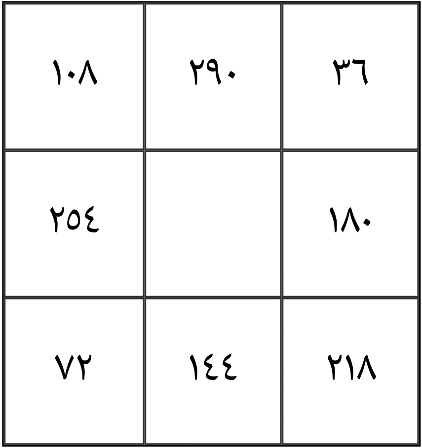

Wannan Aikin mai suna Babban Sirrin FatihaYana daya daga cikin manyan sirrukan fatiha musamman wayanda ake ji dasu a tun ba yanzu ba, manyan malamai sunyi ittifaqin cewa wannan sirrin bashida tamka kuma duk bukatar da mutum ya sa gaba da ita insha Allahu tabbatacciya ce bazai gama aikin ba face bukatarshi ta biya
Dayyu ne Na surarul fatiha shiyasa a koda yaushe nuke son asan sirrin fatiha a musulunci, wannan sirrin dai shi muke kira ba yawa sai zafi dan uwa ina mai shawartar ka da ka riqe wannan sirrin hannu bibbiyu saboda bana wasa bane, iyayen sha fada mana cewa: karanta fatiha don samun nasara a rayuwa
Matakan da za ka bi:
Ka karanta Istigfari (Astaghfirullah) sau 100
Ka karanta Salatin Annabi (Salatul Nabi) sau 100
Ka karanta Lailaha illallah sau 100
Sannan:
ارسط مكصوه علقبد حتضنظغى
Ma'ana: ARSADAN MAKSUHU ALQABIDU HATARANZAGIYU kafa 4444
Karanta wannan ayar sau 111: Iyaka Na'abudu Wa Iyaka Nasta'in
Amma bayan kowanne kafa 10 zaka karanta:
AHAMUN SAQAKUN HALA'UN YASSUN kafa 7
Yaa Wadudu Yaa Baduhu sau 400
Bayan haka, ka ci gaba da karanta:
ARSADAN....(har ka kai adadin da aka ambata)
Abubuwan da za ka lura da su yayin aiki:
- Ka kunna turaren kamshi lokacin aikin
- Ka tabbatar da cewa ka saka bukatunka acikin wannan hatimin dake kasa sannan ka nade layar ka daura akan charbinka da kake yin wuridin dashi, sannan a farin takarda mara zane ake rubutawa
- Ka tabbatar cewa tufafinka sunada tsarki haka inda zakayi wuridin, Kuma aikin na tsawon kwana 7 ake yinta, sannan kada ku manta zaku iya saule application din mu anan ▶️ Download Here ◀️Insha Allahu Zaku samu sirruka Birjib acikinsa sama da sirruka dubu 1000 wanda bai gane yadda ake sirrin ba zai iya mana magana ta whatsapp 08109934185
Insha Allahu, wannan sirri yana aiki.
An gwada shi kuma ya tabbatar da tasiri.
